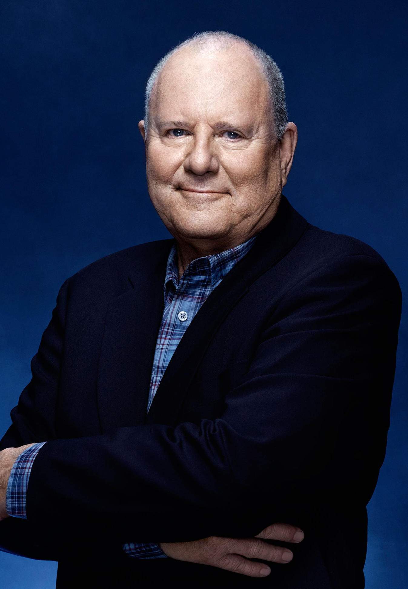

About FaceOff
This is a competition/elimination series, special effects make-up artists participate in elaborate challenges for a grand prize and the honor of being Hollywood's next great effects artist.
Judges
McKenzie Westmore is the host of Face Off. She started acting at the age of three when she was cast in Raging Bull as Robert De Niro's daughter. She later went on to guest star in Weird Science and Star Trek Voyager and appeared in the feature film Star Trek: Insurrection. McKenzie also starred on the NBC soap opera Passions.
Michael Westmore is a member of a makeup dynasty that dates back to Hollywood's golden age. Since 1917, almost every major studio had 'a Westmore' supervising their makeup departments. Michael's career has not been without its rewards as he has been the recipient of a record 42 Emmy Nominations and gifted with 9 statuettes.
Raised in a small suburb of steel town Bethlehem, PA, Glenn’s proclivity for horror films compelled him to work on various community theatre projects as both actor and fledgling make-up artist. Many independent projects followed, providing more opportunity to hone his skills. He graduated summa cum laude with a Bachelor's Degree in both Public Relations and Promotions in 1995, and went straight back to work on various films in the then-bustling New York independent horror scene.